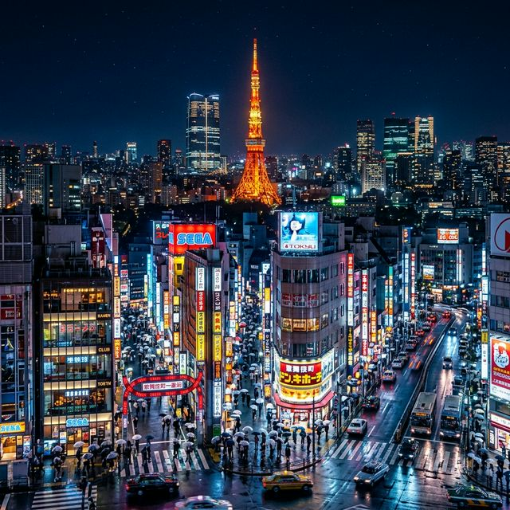

טוקיו - מסורת וטכנולוגיה |
|
ניווט |
ארץ השמש העולהטוקיו מציגה אולי את השילוב המושלם ביותר בעולם בין היסטוריה ומסורת עתיקה לבין חדשנות טכנולוגית מסחררת. לקפוץ ממקדש שינטו סנסו-ג'י העתיק אל תוך רחובות צבעוניים ומוארים בניאון כמו בשיבויה ושינג'וקו, מדהים בכל פעם מחדש!  |